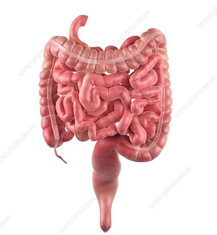

The intestine
How does the intestine work?
The intestine (bowel) is a winding muscular tube extending from the stomach to the anus. Its main purpose is to digest food. But the intestine is not only there for digestion: it also produces various substances that carry messages to other parts of the body, and plays an important role in fighting germs and regulating the body’s water balance. There is a particularly high number of nerve cells in the wall of the intestine. For some people, the intestine reflects how they are feeling: for instance, they might get a stomach ache, diarrhea or constipation when they are stressed or upset about something. The small intestine, which is directly connected to the stomach, is 3 to 5 meters long end-to-end. It is made up of three sections known as the duodenum, jejunum and ileum. The inside wall of the small intestine has folds in it, like the body of an accordion. This makes the surface area very big.
The small intestine
In the small intestine, enzymes (substances produced by the body) break down nutrients such as carbohydrates, proteins or fats into their building blocks. These enzymes are produced in the salivary glands in the mouth, in the pancreas and in the intestinal cells. The intestinal cells absorb the building blocks (for example sugar, amino acids or fatty acids) together with vitamins, salts and water. From there, most of the nutrients enter the bloodstream to be carried to the rest of the body. The small intestinal cells also produce various intestinal hormones. These hormones influence things like the production of bile or pancreatic juice. They also cause more water to be released into the intestine and make you feel full.
The large intestine
In the right lower abdomen, the small intestine leads into the large intestine, which is roughly 1 to 1.5 meters long. The large intestine is made up of the cecum, the appendix, the colon and the rectum, which ends at the anus in the anal canal. In the large intestine, strong, wave-like movements help to push the contents of the intestine towards the anus. The urge to go to the toilet and empty your bowels is triggered when stool enters the rectum. If we suppress this urge, the rectum temporarily stores the stool. How often bowel movements occur varies greatly from person to person: It is completely normal to empty your bowel anywhere between three times a day to three times a week. The frequency mostly depends on how much fiber you get in your diet. Another important task performed by the large intestine is the absorption of water and salts. There are also millions of bacteria in the large intestine. These bacteria break down proteins in the food to produce protein building blocks (amino acids). And they make the vital vitamins B and K.
Sources
Menche N. (ed.) Biologie Anatomie Physiologie. Munich: Urban & Fischer/ Elsevier; 2012. Pschyrembel W. Klinisches Wörterbuch. Berlin: De Gruyter; 2014. Schmidt R, Lang F, Heckmann M. Physiologie des Menschen: mit Pathophysiologie. Heidelberg: Springer; 2011. IQWiG health information is written with the aim of helping people understand the advantages and disadvantages of the main treatment options and health care services. Because IQWiG is a German institute, some of the information provided here is specific to the German health care system. The suitability of any of the described options in an individual case can be determined by talking to a doctor. We do not offer individual consultations. Our information is based on the results of good-quality studies. It is written by a team of health care professionals, scientists and editors, and reviewed by external experts. You can find a detailed description of how our health information is produced and updated in our methods. Return to previous page